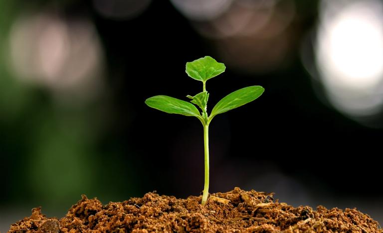
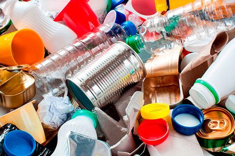
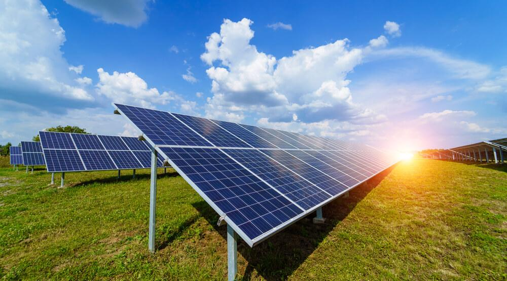
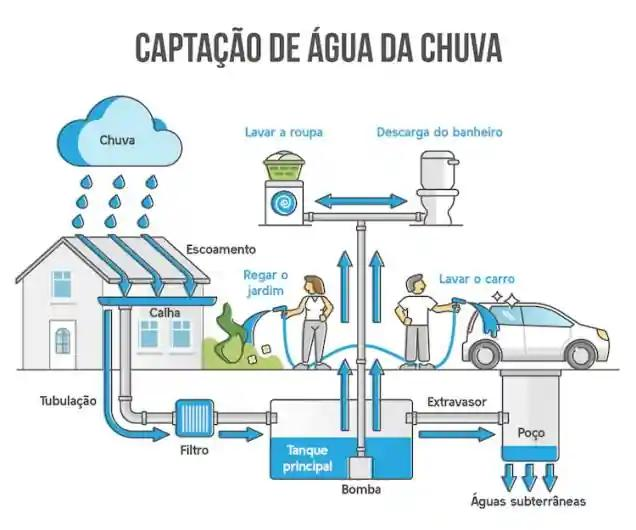
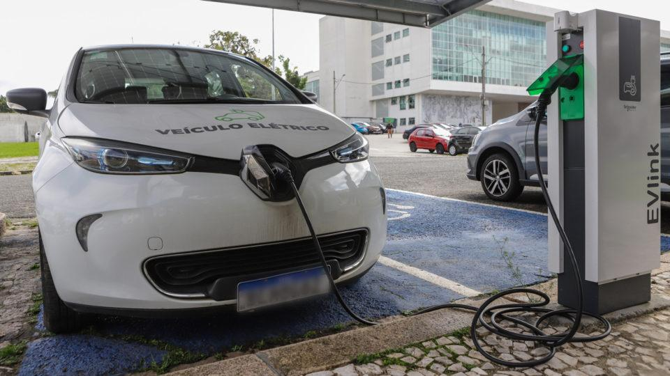

Projeto Agrinho
Isso significa produzir de forma responsável, unindo tecnologia e cuidado com o meio ambiente para gerar bens úteis sem prejudicar a natureza.
Além de proteger a natureza, a sustentabilidade também envolve oferecer boas condições de trabalho e buscar soluções que beneficiem a economia. Dessa forma, é possível atender às necessidades atuais da população sem comprometer os recursos das futuras gerações.
O equilíbrio pode ser alcançado utilizando tecnologias mais limpas, reduzindo desperdícios e aproveitando melhor os recursos naturais.
Empresas e produtores podem reciclar materiais, economizar água e energia, controlar a emissão de poluentes e investir em fontes renováveis.
Dessa forma, é possível produzir o que a sociedade necessita sem causar grandes impactos ao meio ambiente.
🌱 Agricultura sustentável utilizando menos agrotóxicos.
♻️ Fábricas que reciclam resíduos para produzir novos produtos.
☀️ Empresas que utilizam energia solar e eólica.
💧 Sistemas de reaproveitamento da água da chuva.
🚲 Incentivo ao uso de bicicletas e meios de transporte menos poluentes.





Agricultura Sustentável
O equilíbrio entre produção e meio ambiente é essencial para garantir o desenvolvimento econômico sem comprometer os recursos naturais do planeta. Atualmente, o crescimento da população e o aumento do consumo tornam necessário produzir mais alimentos, bens e serviços. No entanto, essa produção deve ocorrer de forma consciente e responsável, evitando danos ao meio ambiente e preservando os recursos para as futuras gerações. A adoção de práticas sustentáveis é uma das principais formas de alcançar esse equilíbrio. A reciclagem de materiais, o uso de energias renováveis, o reaproveitamento da água, a redução do desperdício e a utilização de tecnologias menos poluentes contribuem para uma produção mais eficiente e sustentável. Essas ações ajudam a diminuir os impactos ambientais, preservando a biodiversidade, a qualidade da água, do solo e do ar. Além dos benefícios ambientais, a sustentabilidade também traz vantagens econômicas e sociais. Empresas e produtores que adotam práticas sustentáveis podem reduzir custos, aumentar a eficiência dos processos e melhorar sua imagem perante a sociedade. Ao mesmo tempo, essas iniciativas contribuem para a geração de empregos, para a qualidade de vida da população e para o desenvolvimento das comunidades. Portanto, buscar o equilíbrio entre produção e meio ambiente é uma responsabilidade de todos. Governos, empresas e cidadãos devem trabalhar juntos para promover o desenvolvimento sustentável, garantindo que as necessidades atuais sejam atendidas sem comprometer a capacidade das futuras gerações de satisfazerem suas próprias necessidades. Dessa forma, será possível construir um futuro mais justo, equilibrado e sustentável para todos.
O equilíbrio entre produção e meio ambiente é essencial para garantir o desenvolvimento econômico sem comprometer os recursos naturais do planeta. Atualmente, o crescimento da população e o aumento do consumo tornam necessário produzir mais alimentos, bens e serviços. No entanto, essa produção deve ocorrer de forma consciente e responsável, evitando danos ao meio ambiente e preservando os recursos para as futuras gerações. A adoção de práticas sustentáveis é uma das principais formas de alcançar esse equilíbrio. A reciclagem de materiais, o uso de energias renováveis, o reaproveitamento da água, a redução do desperdício e a utilização de tecnologias menos poluentes contribuem para uma produção mais eficiente e sustentável. Essas ações ajudam a diminuir os impactos ambientais, preservando a biodiversidade, a qualidade da água, do solo e do ar. Além dos benefícios ambientais, a sustentabilidade também traz vantagens econômicas e sociais. Empresas e produtores que adotam práticas sustentáveis podem reduzir custos, aumentar a eficiência dos processos e melhorar sua imagem perante a sociedade. Ao mesmo tempo, essas iniciativas contribuem para a geração de empregos, para a qualidade de vida da população e para o desenvolvimento das comunidades. Portanto, buscar o equilíbrio entre produção e meio ambiente é uma responsabilidade de todos. Governos, empresas e cidadãos devem trabalhar juntos para promover o desenvolvimento sustentável, garantindo que as necessidades atuais sejam atendidas sem comprometer a capacidade das futuras gerações de satisfazerem suas próprias necessidades. Dessa forma, será possível construir um futuro mais justo, equilibrado e sustentável para todos.